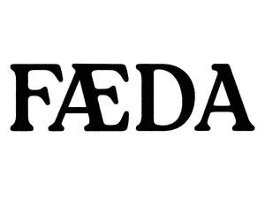

Trade Mark Journal No.2025/033 15 August 2025
UK00004244203 4 August 2025 (9,16,25,35,41,42)

- Class 9
- Compact discs; Pre-recorded compact discs; Prerecorded music compact discs; Optical discs featuring music; Pre-recorded laser discs featuring music; Music recordings; Music cassettes; Music tapes; Downloadable music sound recordings; Prerecorded music videos; Tape recordings of music; Pre-recorded CDs featuring music; Downloadable digital music; Audio tapes featuring music; Electronic sheet music, downloadable; Musical video recordings; Phonograph records featuring music; Prerecorded music audio tapes; Downloadable video recordings featuring music; Downloadable music files; Pre-recorded audio cassettes featuring music; Downloadable musical sound recordings; Digital music downloadable from the Internet; Musical recordings; Musical sound recordings; Pre-recorded DVDs featuring music; Prerecorded video cassettes featuring music; Prerecorded audio tapes featuring music; Prerecorded video tapes featuring music; Pre-recorded video tapes featuring music; Computer software for creating and editing music and sounds; Series of musical sound recordings; Musical cassettes.
- Class 16
- Clothing patterns; Music books; Sheet music; Music magazines; Music scores; Music sheets; Printed music; Music note books; Music in sheet form; Printed music books; Printed sheet music; Printed books in the field of music education.
- Class 25
- Clothing; Knitwear [clothing]; Jackets [clothing]; Ready-to-wear clothing; Woolen clothing; Furs [clothing]; Garments for protecting clothing; Layettes [clothing]; Clothing layettes; Linen clothing; Headbands [clothing]; Headbands for clothing; Gloves [clothing]; Gloves as clothing; Clothes; Aprons [clothing]; Maternity clothing; Kerchiefs [clothing]; Jerseys [clothing]; Denims [clothing]; Shorts [clothing]; Cashmere clothing; Capes (clothing); Oilskins [clothing]; Gabardines [clothing]; Leather clothing; Clothing of leather; Leather (Clothing of -); Silk clothing; Parts of clothing, footwear and headgear; Collars [clothing]; Knitted clothing; Veils [clothing]; Hoods [clothing]; Windproof clothing; Corsets [clothing, foundation garments]; Embroidered clothing; Wristbands [clothing]; Belts [clothing]; Belts for clothing; Bandeaux [clothing]; Rainproof clothing; Waterproof clothing; Casual clothing; Visors [clothing]; Jackets being sports clothing; Ready-made clothing; Jackets (Stuff -) [clothing]; Stuff jackets [clothing]; Playsuits [clothing]; Bottoms [clothing]; Clothing for leisure wear; Latex clothing; Trunks being clothing; Woven clothing; Drawers [clothing]; Drawers as clothing; Infant clothing; Leisure clothing; Clothing for sports; Sports clothing; Ties [clothing]; Athletic clothing; Clothing for children; Muffs [clothing]; Bodies [clothing]; Clothing for babies; Clothing for infants; Tops [clothing]; Clothing for cycling; Weatherproof clothing; Pockets for clothing; Fabric belts [clothing]; Water-resistant clothing; Triathlon clothing; Handwarmers [clothing]; Clothing for skiing; Beach clothing; Chaps (clothing); Thermal clothing; Cowls [clothing]; Men's clothing; Fishing clothing; Braces for clothing; Mitts [clothing]; Dance clothing; T-shirts.
- Class 35
- Marketing; Advertising and marketing; Advertising and marketing consultancy; Promotional marketing; Influencer marketing; Advertising and marketing services; Affiliate marketing; Product marketing; Marketing consultancy; Marketing consulting; Digital marketing; Advertising, marketing and promotion services; Marketing, advertising and promotion services; Advertising, marketing and promotional services; Advertising, promotional and marketing services; Marketing, advertising, and promotional services; Marketing research; Online marketing; Internet marketing; Marketing services; Business marketing consultancy; Marketing forecasting; Financial marketing; Referral marketing; On-line advertising and marketing services; Marketing studies; Targeted marketing; Marketing analysis; Business marketing services; Advertising copywriting; Distribution of advertising, marketing and promotional material; Marketing information; Investigations of marketing strategy; Direct marketing; Promotion, advertising and marketing of on-line websites; Planning of marketing strategies; Marketing advice; Direct marketing consulting; Consultancy services relating to advertising, publicity and marketing; Marketing research services; Dissemination of advertising, marketing and publicity materials; Event marketing; Marketing assistance; Research services relating to advertising and marketing; Marketing management advice; Design of marketing surveys; Database marketing; Marketing agency services; Promotion [advertising] of business; Business marketing consulting services; Development of marketing concepts; Marketing plan development ; Advertising, marketing and promotional consultancy, advisory and assistance services; Copywriting for advertising and promotional purposes; Consultancy services in the field of affiliate marketing; Direct marketing services; Trade marketing [other than selling]; Marketing analysis services; Modeling for advertising or sales promotion; Advice in the field of business management and marketing; Consultancy relating to marketing; Promotional marketing services using audiovisual media; Creative marketing plan development services; Modelling for advertising or sales promotion; Business marketing consultation services; Modeling services for advertising or sales promotion; Recruitment services for sales and marketing personnel; Consultancy regarding advertising communications strategy; Development of marketing strategies and concepts; Marketing advisory services; Advertising services for the promotion of e-commerce; Planning services for marketing studies; Consulting services in the field of Internet marketing; Business advice relating to strategic marketing; Providing marketing consulting in the field of social media; Marketing consultation services; Marketing research and analysis; Marketing research or analysis; Business advice relating to marketing; Marketing (Business advice relating to -); Preparation of marketing surveys; Advertising and marketing services provided by means of social media; Consumer profiling for commercial or marketing purposes; Professional consultancy relating to marketing; Advertising; Analysis of marketing trends; Advertising and marketing services provided via communications channels; Market research and marketing studies; Business consultancy services relating to the marketing of fund raising campaigns; Providing business marketing information; Advertising planning; Brand creation services (advertising and promotion); Developing promotional campaigns for business; Publicity and sales promotion services; Consulting services relating to marketing; Advertising and marketing services provided by means of blogging; Providing advice in the field of business management and marketing; Copywriting; Marketing in the framework of software publishing; Consultancy relating to demographics for marketing purposes; Advertising and promotion services; Information or enquiries on business and marketing; Advertising research; Consultancy regarding advertising communication strategies; Marketing services in the field of travel; Advertising and publicity; Publicity and advertising; Rental of all publicity and marketing presentation materials; Advertising and promotional services; Promotional and advertising services; Promotional advertising services; Advertising and publicity services; Publicity and sales promotion; Advice relating to marketing management; Conducting of marketing studies; Conducting marketing studies; Search engine marketing services; Administration relating to marketing; Sales promotion using audiovisual media; Telephone marketing services [not selling]; Consultancy relating to business advertising; Modelling and models for advertising or sales promotion; Preparation of marketing plans; Estimations for marketing purposes; Consulting in sales techniques and sales programmes; Recruitment advertising; Business advice relating to marketing management consultations; Analysis relating to marketing; Marketing services in the field of web site traffic optimization; Marketing services in the field of restaurants; Marketing services in the field of dentistry; Real estate marketing analysis; Market research for advertising; Promotion [advertising] of travel; Development of promotional campaigns; Development of advertising concepts; Preparation of advertising campaigns; Planning services for advertising; Preparation of reports for marketing; Design of advertising brochures; Digital advertising services; Advertising research services; Sales promotion; Advisory services relating to marketing; Organisation of customer loyalty programs for commercial, promotional or advertising purposes; Retail services connected with the sale of clothing and clothing accessories; Retail store services in the field of clothing; Online retail store services in relation to clothing; Online retail store services relating to clothing; Retail services in relation to footwear; Retail services in relation to jewellery; Retail services in relation to clothing; Retail services in relation to toys; Retail services relating to clothing; Retail services in relation to headgear; Online retail services relating to toys; Retail services in relation to clothing accessories; Mail order retail services for clothing; Retail services in relation to festive decorations; Online retail services for downloadable and pre-recorded music and movies; Promotion of musical concerts; Merchandising; Product merchandising; Merchandizing; Online retail services relating to clothing.
- Class 41
- Music concerts; Recording of music; Music recording; Music publishing and music recording services; Music performances; Jazz music entertainment services; Production of music concerts; Music education; Presentation of music concerts; Pop music concerts (Organisation of -); Live music concerts; Performance of music; Production of music; Music production; Music concert services; Teaching of music; Music publishing; Publishing of music; Tuition in music; Performance of music and singing; Organisation of music concerts; Production of sound and music recordings; Music festival services; Instruction in music; Music instruction; Performing of music and singing; Performance of dance, music and drama; Live music performances; Music entertainment services; Publication of music; Arranging of music performances; Music composition services; Direction of music performances; Organising of festivals relating to jazz music; Composition of music for others; Music composition for others; Music recording studio services; Live music services; Rental of phonographic and music recordings; Music mixing services; Production of music shows; Live music shows; Arranging of music shows; Artistic management of music venues; Music cassettes (Rental of -); Tuition in music appreciation; Music library services; Music group services; Music performance services; Music production services; Publication of sheet music; Music publishing services; Provision of live music; Music transcription for others; Musical concerts by radio; Musical entertainment; Music competition services; Arranging and conducting of music concerts; Live musical concerts; Publication of music books; Providing digital music from the internet; Music transcription services; Entertainment in the nature of live performances by musical bands; Presentation of musical concerts; Musical concerts by television; Education and training in the field of music and entertainment; Selection and compilation of pre-recorded music for broadcasting by others; Sound recording and video entertainment services; Musical concert services; Entertainment in the form of recorded music (Services providing -); Arranging of musical entertainment; Entertainment in the nature of dance performances; Production of musical recordings; Entertainment in the nature of live dance performances.
- Class 42
- Design of clothing, footwear and headgear; Designing of clothing; Design of clothing; Design of clothing accessories; Encoding of digital music; Encryption of digital music; Electronic storage of digital music.
Sam Mackenzie Cowan
Robbie James McNicol